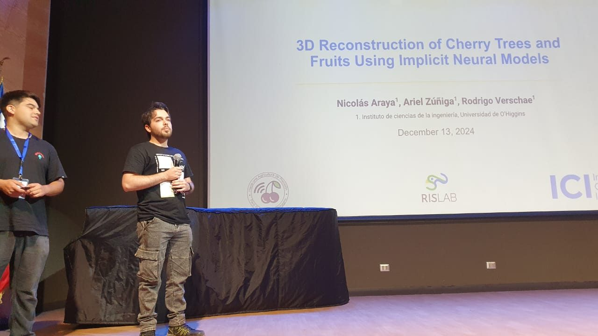

1st place · Master's paper · LACORO 2024
3D Reconstruction of Cherry Trees and Fruits Using Implicit Neural Models
Presented at the LACORO seminar, where it won first place among master's papers. It was the first public version of the idea that became my thesis: rebuild a whole cherry tree in 3D from photos, then find the fruit inside it.
With Ariel Zúñiga and Rodrigo Verschae · RISLab, Universidad de O'Higgins
See where it led: the thesis